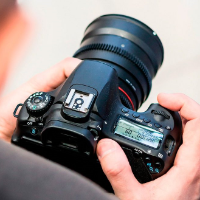
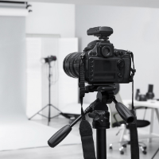
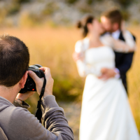
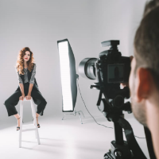
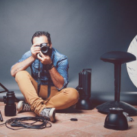

Aprenda sobre o seu Equipamento
Esteja pronto para ação, independente das ferramentas disponíveis
Inscrever-sePilares do Curso
Básico de fotografia
Aprenderá as técnicas de fotografia que podem te ajudar a expressar uma visão mais criativa apenas com a câmera.
Técnicas para cada cenário
Você saberá como tirar fotos incríveis, independente de onde você estiver!
Manuseio do equipamento
Domine o disparo no modo manual e entenda sua câmera.
Como ganhar dinheiro
Aprenda a iniciar um negócio com a fotografia e ganhe dinheiro com suas novas habilidades
Módulos
Introdução

Neste módulo será apresentada uma visão geral sobre o curso, sobre o professor e sobre o mercado.
Equipamentos fotográficos

Neste módulo você aprenderá na prática como usar os seus equipamentos. E saberá qual o melhor para você independente da ocasião.
Montando a imagem

Neste módulo apreenderá como tirar uma foto, vai aprender também como tirar uma foto perfeita, como editar, modificar e deixar a foto mas bonita e sem borrados.
Luz - entenda a parte técnica

Neste módulo vai entender como posicionar as luzes e como tirar as fotos num ângulo bom, aprendendo a téoria e começar a ter técnica de como tirar.
Entrando na prática

Neste módulo você vai ser ensinado e vai fazer na prática tudo que apreendeu até agora e mostrar como você é capaz.
Entendendo a pós produção
Neste módulo entenderá como é depois da produção das fotos e vai nós mostrar sua criatividade, e começar sua produção sozinho.
Introdução
- Introdução/Boas Vindas
Bem-vindo à Picture in Picture de Fotografia! Nesta lição, você será recebido por Erick, Ana e Will com informações importantes sobre a melhor forma de fazer este curso, o que está incluído e como você pode torná-lo ainda melhor. Obrigado por se inscrever!
- Tipos de
câmera
Nesta lição da Picture in Picture de Fotografia, você vai ver como funciona uma câmera básica - o primeiro passo para entender como tirar fotos melhores.
- Revelando o Retrato
Nesta lição da Picture in Picture de Fotografia, você aprenderá neste curso o que é um Retrato. Conceituar e entender o processo por trás da fotografia que descreve uma pessoa em uma imagem. As relações entre fotógrafo e fotografado, o sujeito e a criação do personagem, planejamento, estratégias, abordagens, técnicas de iluminação, edição e finalização. O curso é dirigido a fotógrafos que desejam se aprofundar nos diferentes aspectos da fotografia de retrato.
- Abertura do diafragma
Nesta lição da Picture in Picture de Fotografia, você verá A regulagem da abertura do diafragma deixará a foto mais clara ou mais escura. Funciona parecido com a pupila do nosso olho, quanto mais aberto , mais clara
fica a imagem.Além da luminosidade, controla a profundidade de campo, ou seja a zona de foco da foto. O diafragma bem aberto (f mais baixo) é capaz de focalizar apenas um plano, obrigando o fotógrafo a escolher qual elemento ficará em foco e quais planos ficarão desfocados. Já o diafragma bem fechado (valor mais alto de f) garante maior profundidade de campo, ou seja, foco em múltiplos planos.
- Velocidade
Nesta lição da Picture in Picture de Fotografia, permitem que o usuário controle diversos parâmetros antes de fazer uma foto. Entre as opções, é possível configurar a câmera para captar pessoas e objetos em movimento. Para esse tipo de imagem, o uso do foco automático é recomendado, assim como a configuração certa da abertura de diafragma e nível de ISO da câmera. Outro efeito possível para captar movimento é o panning - técnica em que o fotógrafo segue o objeto em movimento.
- ISO
Nesta lição da Picture in Picture de Fotografia,você vai ver como é a velocidade com que o sensor registra a imagem. A Sensibilidade ISO é indicada por números inteiros (ex: 100, 200, 1600, 3200) que apontam o nível de sensibilidade do sensor à luz. Quanto maior o número, maior a sensibilidade. Mas em geral funciona assim: quanto maior o ISO melhor o sensor capta a luz disponível
- Fotômetro - Histograma
Nesta lição da Picture in Picture de Fotografia,Para os iniciantes, O histograma é uma análise da iluminação presente na imagem por meio de um gráfico. Pode parecer um pouco complicado de ler esta representação, mas nós vamos te guiar! Nas câmeras digitais é possível consultar o histograma de acordo com o manual de instruções de cada aparelho.
A linha horizontal indica a luminosidade, os números vão de 0 a 255, o primeiro representa o preto e o último é o branco. Verticalmente, o gráfico mede quanto espaço a luminosidade está ocupando na imagem. Os números vão de 0 a 100 e correspondem a dimensão do determinado tom de cor dentro do enquadramento. A grande importância de aprender a ler um histograma é que você pode descobrir quanta luz realmente foi capturada na sua imagem. Com esta ferramenta, você pode identificar problemas no monitor da sua câmera ou até mesmo no modo como você imprime as suas fotos. - Aula externa 1
Nesta lição da Picture in Picture de Fotografia,Laboratório Digital Correção de exposição, luz e cor O uso do histograma Entendendo a luz correta no tratamento de imagem Correção precisa de exposição, níveis e curvas segundo o Histograma Matiz e saturação Ajuste criativo de cor Equilíbrio de sombras e altas luzes
- Ensaio Externo
Nesta lição da Picture in Picture de Fotografia,De maneira geral, a característica principal de um ensaio fotográfico é expressar a opinião do artista (fotógrafo) sobre determinado tema. E como ele faz isso na prática? O fotógrafo clica imagens que representam sua visão sobre um assunto, gerando no espectador uma ou mais reflexões sobre aquele ponto de vista.
Equipamentos fotográficos
- O que é Objetiva?
- Olho de peixe ou fisheye
- Grande Angular
- Teleobjetiva
- Macro
- Fixa ou Prime
- Fixa x Zoom
- Conclusão sobre Objetiva
- Aula Extra - Longa Exposição
Nesta lição da Picture in Picture de Fotografia,diz respeito ao fato de que as imagens formadas dependem da existência de algo que, objetivamente, é colocado diante da câmera. Essa escolha envolve uma série de arbitrariedades que fazem da objetividade fotográfica uma questão controversa entre pensadores e artistas.
Nesta lição da Picture in Picture de Fotografia,falaremos de uma lente Olho de Peixe ou Fish Eye nada mais é do que uma super grande angular. Ela é tão angular que as imagens são esféricas e distorcidas, criando a impressão de uma enorme profundidade de campo. A maioria das lentes Olho de Peixe é fixa, porém existem também zoom, como a Canon 8-15m com ângulo de visão até 180º.
Nesta lição da Picture in Picture de Fotografia,Mais informalmente, em fotografia e cinematografia, uma objetiva grande-angular refere-se a uma lente cuja distância focal é substancialmente menor que a distância focal de uma objetiva normal para o tamanho da imagem produzido pela câmera, se ele for ditado pelas dimensões do quadro da imagem no filme, para câmeras
Nesta lição da Picture in Picture de Fotografia,a teleobjetiva é extremamente útil, e um dos principais acessórios no arsenal de um fotógrafo. Como fotógrafo, você sabe que as lentes que você escolhe fazem toda a diferença no resultado final das fotos. Algumas pessoas até consideram esse acessório mais importante que a própria câmera! Existem muitas variedades de lentes disponíveis no mercado. Para cada situação e efeito, você pode contar com uma diferente. A teleobjetiva é uma lente para câmeras fotográficas que possui uma grande distância focal. O acessório, no entanto, não é definido apenas por isso. Essa estrutura de objetiva fotográfica possui o comprimento físico menor que a distância focal. Isso é conseguido através do uso de um grupo de lentes conhecido como um grupo de telefoto. Elas são capazes de estender o caminho da luz, criando uma lente de foco longo em um design mais curto.
Nesta lição da Picture in Picture de Fotografia,Uma foto é considerada macro quando o tamanho do assunto é fotografado com uma proporção entre 1:1 e 10:1, ou seja, quando o detalhe em questão é igual ou até 10x maior que o real. Uma proporção acima de 10:1 é considerada microfotografia.17 de ago. de 2015
Nesta lição da Picture in Picture de Fotografia,nos apreenderemos que nos últimos anos, as lentes de zoom têm entrado nos corações de muitos fotógrafos profissionais que trabalham com o mais óbvio, a escolha versátil. Com os sensores mais recentes produzindo qualidade incrível, mesmo em altíssimos ISOs, faz sentido porque mais pessoas têm se inclinado para a conveniência de lentes de zoom. As lentes de zoom também ficaram impressionantemente afiadas. A maioria, até mesmo algumas lentes kit baratas, são nítidas o suficiente para as necessidades do dia à dia e também possuem sistemas eficazes de estabilização de imagem.
Nesta lição da Picture in Picture de Fotografia,A escolha entre uma lente zoom ou fixa – também conhecida como prime é dúvida comum entre os fotógrafos iniciantes. A diferença entre essas duas opções é, principalmente, a distância focal. Enquanto a lente zoom pode variar a distância em menores ou maiores intervalos, a lente fixa é construída para ter apenas uma distância estável.
Nesta lição da Picture in Picture de Fotografia,mostra para vocês ter noção de objetividade fotográfica diz respeito ao fato de que as imagens formadas dependem da existência de algo que, objetivamente, é colocado diante da câmera. Nesse sentido, a fotografia é considerada como um índice de uma presença e costuma ser comparada com outros tipos de sinais, como a fumaça ou a cicatriz.
Nesta lição da Picture in Picture de Fotografia,se vocês quiserem neste tipo de curso de foto é tirada com um tempo de exposição maior do que o geralmente utilizado nas fotos, fato que gera este efeito. Longa exposição, portanto, é quando o sensor passa mais de um segundo exposto, ou seja, com o obturador aberto.
Montando a imagem passo a passo
- Composição
- Foco
- Profundidade de campo
- Regra dos terços
- Regra dos terços na prática
- Linhas
- Texturas e fundos
- Dicas em geral
- Aula extra-Profundidade
Nesta lição da Picture in Picture de Fotografia, o termo composição fotográfica diz respeito à organização dos elementos visuais de suas fotos na tela da câmera digital, incluindo o seu tema principal, o periférico e elementos de fundo que compõem a sua fotografia. O equilíbrio entre esses pontos é o que chamamos de fotografia bem-sucedida.
Nesta lição da Picture in Picture de Fotografia,é um dos conceitos mais básicos na fotografia e extremamente essencial para produzir uma foto de qualidade. Chamamos de área em foco o pedaço da imagem que está nítido, chamando mais atenção do que os elementos que estão fora do ponto de nitidez O famoso efeito de “borrado” na imagem é o que chamamos de foco na fotografia! É ele quem determina o grande destaque do clique.
Nesta lição da Picture in Picture de Fotografia,é gama de distâncias em torno do plano focal na qual há nitidez aceitável. A profundidade de campo depende dos tipos de câmeras, aberturas e distância, apesar de também ser influenciada pelo tamanho da impressão e pela distância de visualização da imagem.
Nesta lição da Picture in Picture de Fotografia,é uma teoria utilizada na hora de compor uma imagem. Se caracteriza em dividir uma imagem em duas linhas horizontais e duas linhas verticais, em que os 4 pontos de interseção dessas 4 linhas são os pontos onde os nossos olhos têm maior atenção.
Nesta lição da Picture in Picture de Fotografia,é uma teoria utilizada na hora de compor uma imagem. Se caracteriza em dividir uma imagem em duas linhas horizontais e duas linhas verticais, em que os 4 pontos de interseção dessas 4 linhas são os pontos onde os nossos olhos têm maior atenção
Nesta lição da Picture in Picture de Fotografia,vamos apreender principais de uma composição fotográfica são as retas, curvas e horizontais que podem influenciar a maneira que o apreciador vê sua imagem. Por exemplo, se fizer a foto de uma cena evidenciando a simetria das linhas, você certamente trará harmonia e senso de organização.
Nesta lição da Picture in Picture de Fotografia, pode se apresentar nas nossas fotografias de diversas maneiras. Elas podem se apresentar como um conjunto de pontos, linhas retas, curvas ou sinuosas. A textura pode ser macia, áspera, lisa, enrugada, etc. e já a textura enrugada nos transmite tristeza, sofrimento, umidade.
Nesta lição da Picture in Picture de Fotografia,Você vai apreender 8 dicas em geral sobre fotografia elas são: Fique de olho no horizonte;Conheça seu maior ângulo; Evite tirar fotos de rosto de baixo para cima;Fotografe o sujeito virado para "dentro"da foto não para "fora"; Entenda oque cada ângulo pode fazer nas suas fotos;Utilize a regra dos terços; Saiba aonde é "ok" cortar as pessoas e onde é estranho e Edite suas imagens.
Nesta aula extra da Picture in Picture de Fotografia, além de apreender e praticar tudo que aprendeu nos Módulos vai apreender mais uma matéria e praticar.A profundidade é o fator que determina que parte da imagem estará em foco e quanto estará desfocado, tanto na frente quanto atrás do assunto da foto. Ela define que áreas da foto ficarão em foco (nítida e clara) e quais estarão em desfoque (borrada e suave).
Luz - conhecendo e entendo a parte técnica
- Iluminação
- Iluminação em cenários
- Iluminação em objetos
- Luz difusa
- Luz direta
- Contra Luz
- Luz Artificial
- Balanço de branco WB
- Ensaio Externo
Nesta matéria da Picture in Picture de Fotografia: É fotometrar nada mais é do que a escolha da iluminação da sua cena de acordo com a definição de parâmetros na sua câmera. A definição da exposição correta significa trabalhar com a iluminação que você quer para sua imagem. Nesse sentido, a luz pode ser dura ou suave.
Nesta matéria da Picture in Picture de Fotografia: A produção de um programa de televisão passa, como sabemos, por várias etapas antes de chegar ao ponto de ser gravado. Todas essas fases são exaustivamente estudadas, discutidas e ensaiadas para que a possibilidade de ocorrência de problemas na hora do vamos ver seja mínimia. Tudo é feito primeiro, no computador, e então, estando tudo bem… luzes, câmera, ação! Na verdade mesmo, esse jargão é mais usado em cinema. Na TV o diretor diz: “gravando”!
A iluminação é um dos mais importantes itens da produção de um programa de televisão, e para atendê-lo é preciso que o profissional iluminador tenha um bom conhecimento técnico, muita vivência e grande consciência sobre o trabalho a ser realizado.As técnicas variam conforme os tipos de programas, com os cenários e cores a serem utilizadas, com os materiais, enfim, cada caso precisa de um tratamento específico por parte do iluminador e seus auxiliares.
Nesta matéria da Picture in Picture de Fotografia: É impossível não pensar e iluminação quando se fala em fotografia, caso você não saiba a palavra fotografia tem associação com escrever com a luz, por aí já se entende que esse é um dos cuidados mais importantes na hora de capturar uma imagem ou uma cena.
No entanto, não é simplesmente a quantidade de luz que importa para que uma fotografia fique com qualidade, existem diferentes tipos de fontes de iluminação que acabam por interferir no resultado final. E além disso, é preciso também aprender sobre o posicionamento das fontes de luz para conseguir assim melhores fotos.
Tudo que envolva a emissão de luz pode servir como fonte de iluminação para fotografia, mas obviamente existem alguns recursos que são os principais. No primeiro momento é preciso entender que especificamente existem três tipos de luzes, elas são divididas entre: Luz natural Luz artificial E Luz Ambiental Ao saber aproveitar cada uma dessas luzes, é possível entender que todas fazem parte de um conjunto essencial para tirar boas fotografias.Nesta matéria da Picture in Picture de Fotografia: A importância das qualidades da Luz, que pode variar entre ser dura ou difusa, e mostramos alguns exemplos da luz dura.
Hoje vamos mostrar alguns exemplos da luz difusa, que é uma luz suave; ao contrário da luz dura, não gera contornos de sombra nítidos, e sim a passagem da luz para sombra é gradual, como um degradê. A sombra ainda existe (pois sem sombra não haveria volume), porém ela é sutil e quase imperceptível. Exemplo: a luz do sol num dia nublado. Em estúdio, usamos fontes de luz grandes em relação ao assunto fotografado, e com difusores, que proporcionam espalhar a luz, como o Hazy, ou Softbox.Nesta matéria da Picture in Picture de Fotografia: aprenderá que isso não quer dizer que a luz mais difusa é ruim, mas se você pretende criar um impacto, é bom optar pela luz direta. Em fotos sensuais, é comum utilizar esse tipo de iluminação, principalmente quando se pretende realçar as curvas da modelo.
Nesta matéria da Picture in Picture de Fotografia: O contraluz nada mais é do que fotografar um objeto com uma luz de fundo muito mais forte do que a luz que ilumina o objeto. Essa luz pode ser o sol, o próprio céu após o pôr do sol, um flash e até mesmo, estando no interior de um ambiente, a luz externa advinda da janela ou porta.
Nesta matéria da Picture in Picture de Fotografia: É o tipo de iluminação artificial mais popular que existe. Mesmo se você não trabalha com fotografia, sabe que os flashes servem para iluminar a imagem.Com a aplicação bem pensada, o flash vai dar detalhes na imagem que uma iluminação natural não permitiria. Quando o flash é externo, o cuidado já é outro.
Nesta matéria da Picture in Picture de Fotografia: Balanço dos Brancos na fotografia digital significa o ajuste de cores para que a imagem pareça natural. Esse é um processo que passamos de forma a ajustar as cores para que se pareçam com as cores reais da imagem.
Nesta matéria da Picture in Picture de Fotografia: Estou considerando como ensaio externo todo ensaio que não é no estúdio, ou seja, ensaios em parques, casa, jardins. As dicas de ensaio externo que verá podem sem aplicadas para diversos tipos de ensaios como casal, book feminino ou masculino, criança, família e etc.
Entrando na prática
- Áreas de atuação
- Retratos
- Eventos
- Viagens
- Esportes
- Objetos
- Paisagens
- Aula extra 3
- Novidades/Recado
Nesta matéria da Picture in Picture de Fotografia: O bom profissional conhece várias linguagens fotográficas, mas costuma se especializar em um estilo, como o jornalístico, o documental, o artístico ou o comercial. Ele atua em jornais, revistas, sites, emissoras de TV, no cinema, em agências de publicidade ou como autônomo
Nesta matéria da Picture in Picture de Fotografia: Muitas pessoas confundem a palavra retrato com a palavra fotografia. Retratos são fotografias que mostram pelo menos uma pessoa, com o rosto em destaque (ou parte dele). Assim, por exemplo, tanto uma foto em grupo quanto uma foto para documentos podem ser classificadas como retratos.
Nesta matéria da Picture in Picture de Fotografia: A fotografia de eventos é um nicho da fotografia profissional. O objetivo do fotógrafo aqui é registrar os momentos chave de um evento social, os convidados que estavam presentes, os anfitriões e a interação entre as pessoas. As fotos de eventos podem ter diversas finalidades para seus clientes.
Nesta matéria da Picture in Picture de Fotografia: A viagem fotográfica é uma maneira de tirar fotos diversificadas de cenários dos lugares percorridos — incluindo aquelas que não são tão tradicionais assim, como as feitas em momentos do cotidiano e aleatoriamente.
Nesta matéria da Picture in Picture de Fotografia: A fotografia esportiva é, tal como o próprio nome indica, um gênero de fotografia que visa registrar atletas, geralmente em momentos de competições, eventos e outras performances dos mesmos. As fotos buscam, na maioria dos casos, retratar os movimentos e também documentar o evento em questão.
Nesta matéria da Picture in Picture de Fotografia: Essa técnica é, literalmente, ter um pequeno objeto entre a sua lente e o assunto principal da sua imagem.A ideia geral de fotografar através de objetos é deixar o primeiro plano desfocado e ser capaz de capturar a imagem através dele, mas ao mesmo tempo, manter a imagem do sujeito principal da foto bem nítida.
Nesta matéria da Picture in Picture de Fotografia: É um tipo de fotografia de natureza na qual são captados grandes cenários naturais. É costume utilizar-se objetivas de grande angular e aberturas muito reduzidas para poder trabalhar a maior profundidade de campo possível.
Nesta matéria da Picture in Picture de Fotografia: Nessa aula extra, aprenderá e revisará tudo que aprendeu e vai revisar também e terá tipo um teste ou prova para sabermos se você aprendeu tudo que tinha que aprender e levar isso para sua vida toda.
Nesta matéria da Picture in Picture de Fotografia: Você terá várias novidades sobre fotografia que você levará para sua vida toda. E o Recardo seria:"Fotografar,é colocar na mesma linha,a cabeça, o olho e o coração."
Entendendo a pós produção
- Edição
- Raw x JPG
- Foto de celular
- Tratamento de imagem Lightroom
- Foto para feeds
- Photoshop PS
- Eventos
- Ensaio Moda
- Portifólio
Nesta matéria da Picture in Picture de Fotografia: pode ser facilmente confundida pelo fato do termo em inglês 'edit' ser usado em softwares para tratamento de cor. Assim como na galeria do seu celular a opção 'edit' abre as ferramentes de corte, filtro, cor e luz, o termo editar fotos é conhecido como tratar ou corrigir algo em uma imagem.
Nesta matéria da Picture in Picture de Fotografia: Vai saber que essa é a principal diferença entre o JPG (e outros formatos de foto) e o RAW:enquanto os primeiros são como a foto impressa, que vai sofrer perdas se for editada, os arquivos RAW são como negativos, que podem ser revelados como você quiser e quantas vezes for preciso.
Nesta matéria da Picture in Picture de Fotografia: Vai aprender e tirar fotos pelo celular,e vai praticar tudo conhecer e configurar a câmera do celular, usar as grades, definir foco e muito mais.
Nesta matéria da Picture in Picture de Fotografia: Quando você fala em tratar uma foto, quer dizer que você vai alterar o arquivo, deixando assim de ser um arquivo cru. No Lightroom, quando você adiciona um preset de casamentos nas suas fotos, por exemplo, você está tratando a foto.
Nesta matéria da Picture in Picture de Fotografia: Você aprenderá como tirar fotos para por nos feeds em qualquer rede social e usar a edição que você aprendeu aulas passadas.
Nesta matéria da Picture in Picture de Fotografia: Vai aprender usar O Adobe Photoshop é um software definido como editor de imagens. Desenvolvido pela Adobe Systems, o aplicativo, sem dúvidas, é o que possui maior destaque no mundo da fotografia e do design gráfico.
Nesta matéria da Picture in Picture de Fotografia: Além de usar as fotos para divulgar seus eventos e sua empresa nas mídias sociais, você poderá ainda fortalecer os vínculos criados entre as pessoas presentes na ocasião. Sua equipe de marketing terá material próprio para trabalhar e divulgar melhor sua empresa.
Você pode utilizar-se delas para enviar notícias do evento realizado para a imprensa, por exemplo, como jornais e revistas especializadas no ramo. Você poderá aproveitar-se delas para atualizar seu site, além de promover um jeito de fazer essas fotos chegarem ao público presente, como forma de agradecimento pela presença e pelo sucesso do evento. Isso é cativar pessoas. As fotos também podem ser usadas em campanhas promocionais e em reuniões de negócios da sua empresa.
Nesta matéria da Picture in Picture de Fotografia: Nesse tipo de fotografia, todo o foco está voltado para o produto, e, por isso, o ensaio é menos conceitual. As fotos desse tipo de sessão podem ser usadas em catálogos de moda, para apresentar uma coleção, e nas redes sociais.
Nesta matéria da Picture in Picture de Fotografia: Um bom fotógrafo é identificado pelo melhor do seu trabalho fotográfico. Quando essas imagens estão organizadas em um lugar, seja em uma pasta de imagens impressas ou em um site na internet, chamamos esse conjunto de portfólio.
Recomendações
Cristian Andersen
"Gostei muito dos arquivos e assuntos elaborados no curso."
Daniel Deonilio
"Curso muito bom com bastante conteúdo!"
Erick Rangel
"Ótimo curso eu recomendo!"
Willian Rodrigues
"O curso foi muito bacana."
Matricule-se
de R$ 699,99
por R$ 499,99